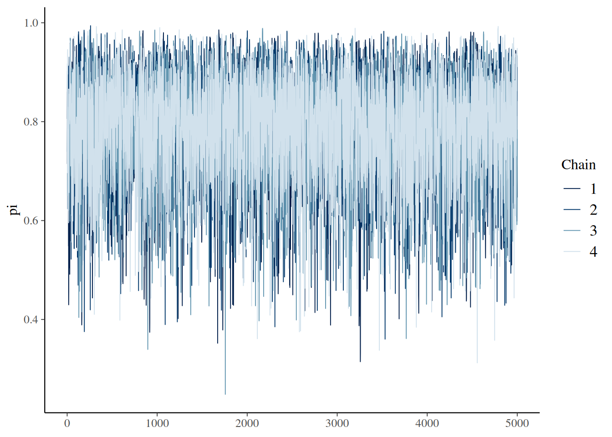
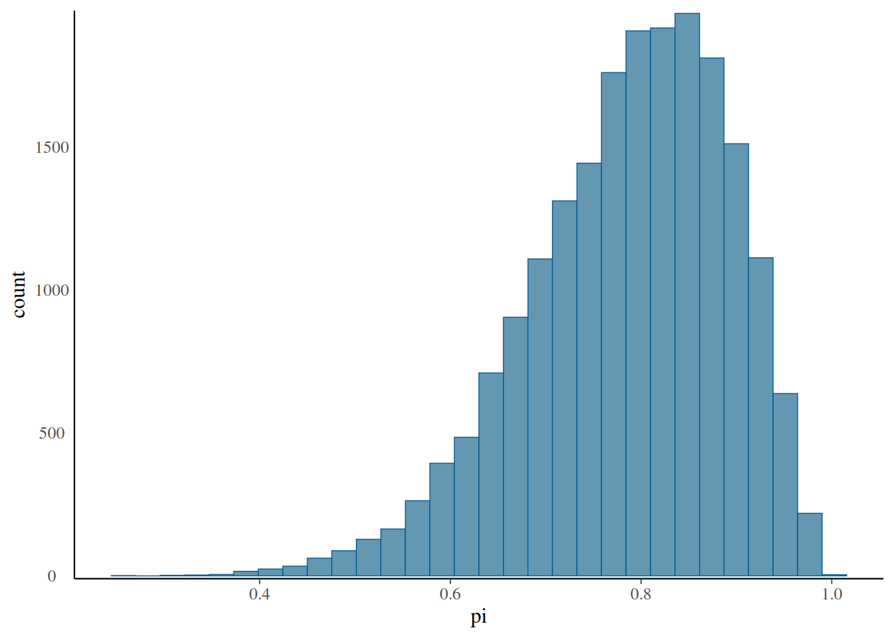
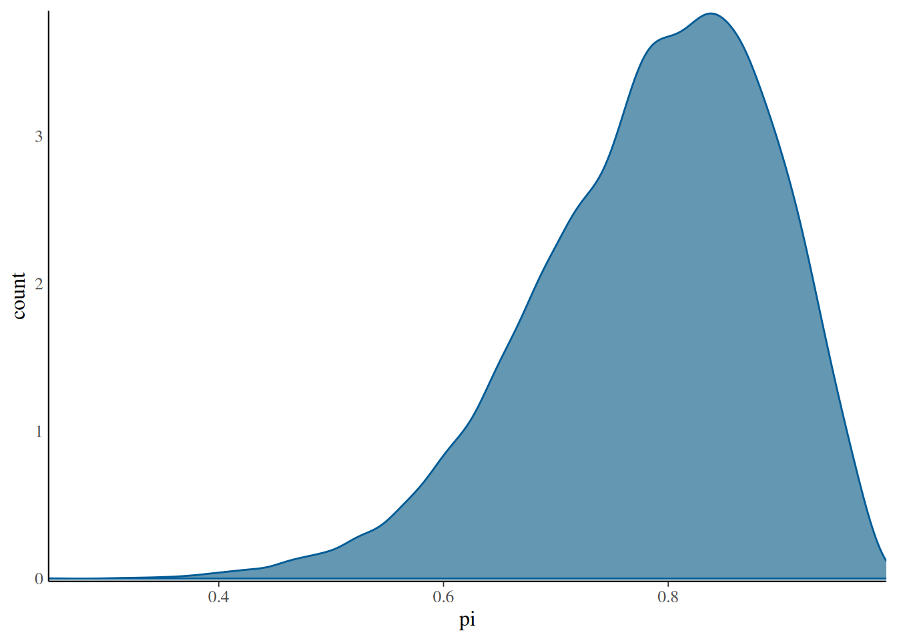

By Beta-Binomial conjugacy, we know that the posterior is \(\pi | Y=y \sim Beta(2 + y, 2+10-y)\). The function stan(), loosely speaking, chooses an appropriate MCMC algorithm and runs it to produce apprximate samples from Beta-Binomial posterior.
## step 1: define model structure as character stringbb_model <-" data { int<lower = 0, upper = 10> Y; } parameters { real<lower = 0, upper = 1> pi; } model { Y ~ binomial(10,pi); pi ~ beta(2,2); }"## step 2: simulate posterior using stan() functionbb_sim <-stan(model_code = bb_model, # character string defining modeldata =list(Y =9), # list of observed datachains =4, # number of parallel Markov chains to runiter =5000*2, # number of iterations or length of each Markov chain # nolintseed =84735)
The object bb_sim contains four parallel markov chains run for 10,000 iterations each. If we don’t exclude any of the data points, we have a combined Markov chain sample size of 40,000.
Burn-in is the practice of discarding the first portion of Markov chain values.
# the first 5000 samples from each Markov chain are removed as part of burn-inas.array(bb_sim, pars ="pi") %>%dim()
[1] 5000 4 1
The \(\pi\) values under the columns chain:1 come from a Markov Chain. We see that, for a fixed chain, parameter \(\pi\) traverses the sample space or range of posterior plausible \(\pi\) values.
# first five realizations of the four parallel MC chainsas.array(bb_sim, pars ="pi") %>%head()
A MC trace plot illustrates this traversal, plotting parameter values (\(\pi\)) on y-axis against iteration number on x-axis. Such a trace plot illuminates the longitudinal behavior of Markov chains. For this, we can use the function mcmc_trace() from the package bayesplot.
mcmc_trace(bb_sim, pars ="pi")

In addition to how the chain traverses the sample space, we also want to look at the distribution of values these chains visit while ignoring the order of visits. The histogram we get, will be a histogram constructed using all 20,000 values (from all four chains). This histogram will be a good approximation of the target distribution or posterior distribution.
# histogram of Markov chain valuesmcmc_hist(bb_sim, pars ="pi") +yaxis_text(TRUE) +ylab("count")
`stat_bin()` using `bins = 30`. Pick better value with `binwidth`.

# density plot of Markov chain valuesmcmc_dens(bb_sim, pars ="pi") +yaxis_text(TRUE) +ylab("count")

When we are unable to provide derive a posterior, simulated samples provide a crucial approximation. Simulations aren’t perfect. This motivates us towards Markov Chain Diagnostics. MCMC diagnostics deal with the following questions:
How does a “good” Markov chain look like?
How to tell if our MC samples provide a “reasonable” approximation to the posterior?
How “big” should our MC sample size be?
Answering the above diagnostics related questions is both an art and science. With experience, one gets a feel for “good” and “bad” Markov chains. Chapter 6 of the textbook looks at some visual and numerical diagnostic tools. These tools need to be used holistically
numerical diagnostics: effective sample size, autocorrelation and R-hat.
A “good” trace plot looks like a bunch of white noise with no discernible trends or notable phenomena. This nothingness implies that the chain is stable. The traceplots below are taken from Ch6 of the Bayesrules textbook.